Android Studio 3.2を日本語化する
Androidは Studioはメニューや表示されるメッセージが英語ですが、Pleiades プラグインを使用して日本語化することができます。ここではAndroid Stuido3.2を日本語化して利用する手順について解説します。(Android Studioは先にインストールしておいてください。インストール方法は「Android Studioのダウンロードとインストール」を参照されてください)。
目次
Pleiadesプラグインをダウンロードする
Android Studioの日本語化にはPleiadesプラグインを利用します。次のURLへアクセスしてください。
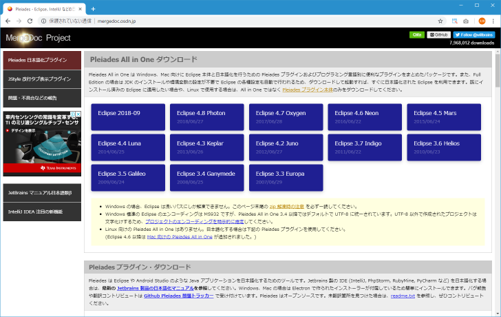
「Pleiades プラグイン・ダウンロード」のブロックをみてください。今回はWindows10(64bit)環境で利用しますので、「Windows」のところをクリックしてください。
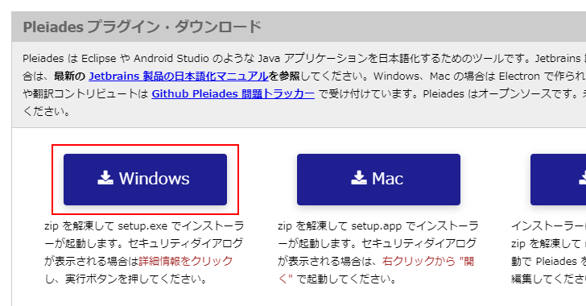
Pleiadesプラグインのダウンロードが開始されます。任意の場所に保存しておいてください。
Pleiadesプラグインをインストールする
続いてPleiadesプラグインをインストールします。ダウンロードしたファイルは圧縮ファイルとなっていますので展開してください。
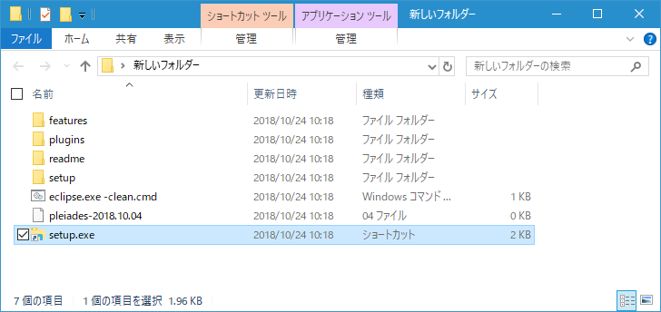
「setup.exe」をダブルクリックして起動してください。次のような画面が表示されます。最初に日本語化するアプリケーションを選択します。画面上の「選択」をクリックしてください。
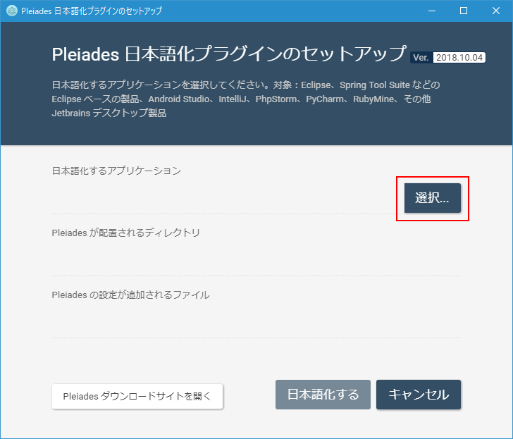
ファイル選択ダイアログが表示されますので「studio64.exe」を選択し「開く」をクリックして下さい。Android Studioをデフォルトの場所でインストールした場合は「C:¥Program Files¥Android¥Android Studio¥bin¥studio64.exe」にあります。
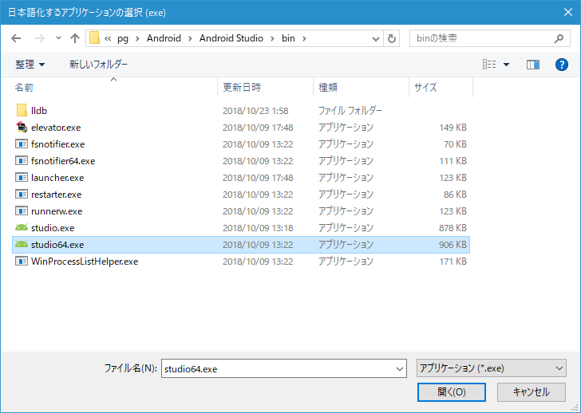
「Pleiades が配置されるディレクトリ」および「Pleiades の設定が追加されるファイル」も自動的に設定されます。「日本語化する」をクリックしてください。
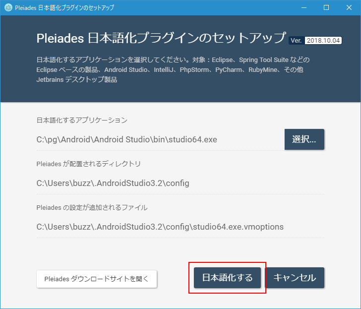
次のようなダイアログが表示されればインストールは完了です。
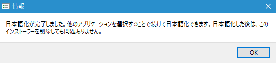
「終了」をクリックしてウィンドウを閉じてください。
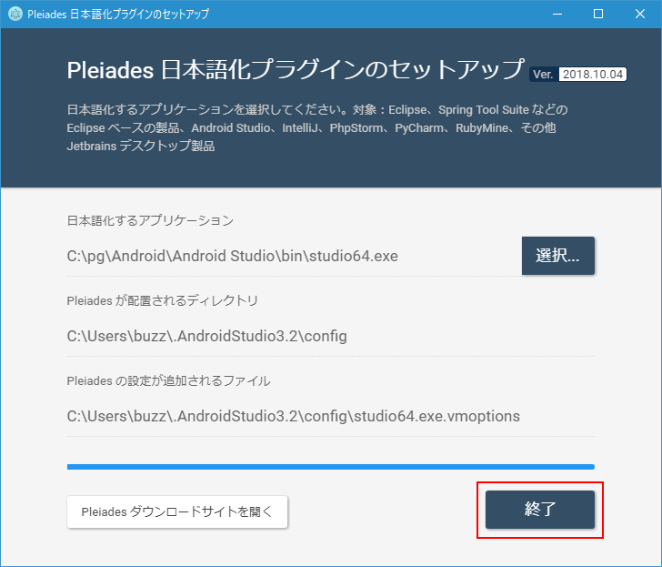
Android Studioが日本語化されたかどうか確認する
それではAndroid Studioが日本語化されたかどうか確認してみます。Android Studioを起動してください。
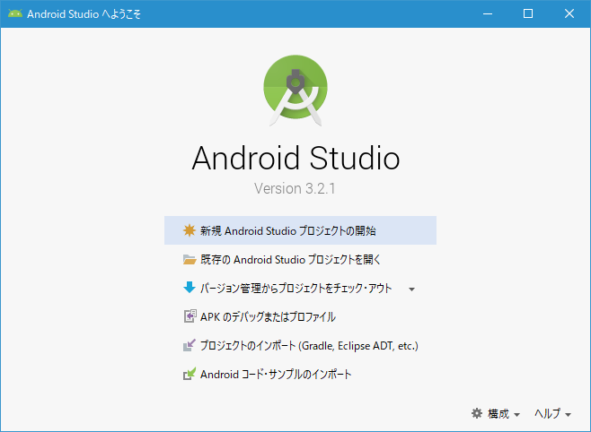
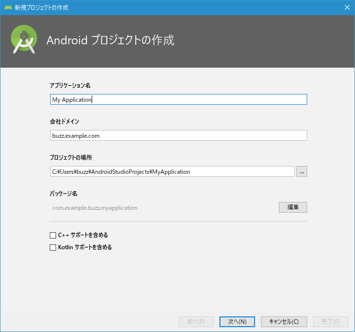
Android Studioで表示されるメニューやラベルなどが日本語化されていることが確認できます。
日本語化したAndroid Studioを英語に戻す
日本語化したAndroid Studioを英語に戻すには「studio64.exe.vmoptions」ファイルを編集します。このファイルの設置場所はインストール時の次の場所に表示されています(ユーザー名の部分はユーザー毎に異なります)。
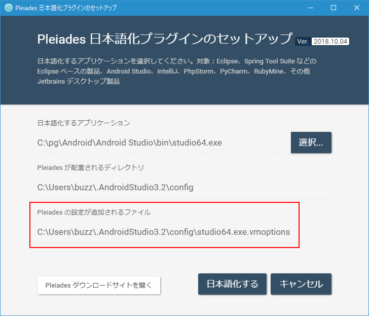
ファイルが見つかりましたらテキストエディタで開いてください。
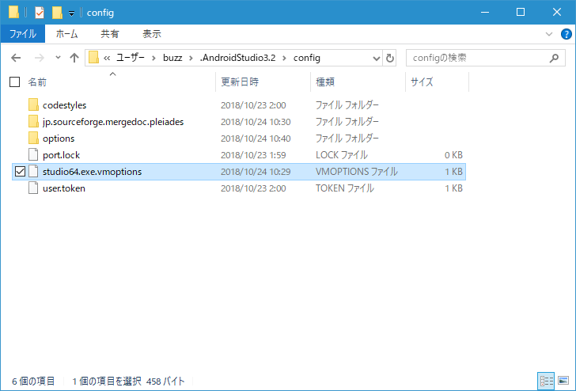
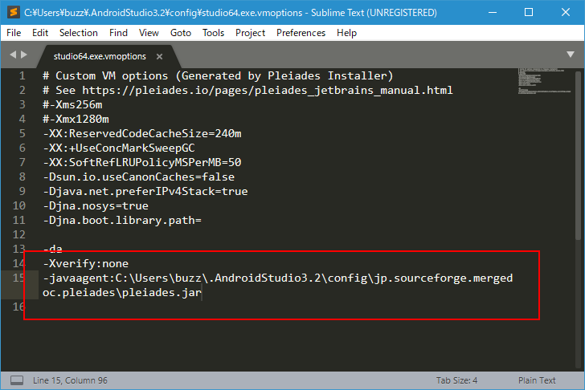
ファイルの最後の2行に対してそれぞれ行の先頭に「#」を追加してコメントアウトしてください。
-Xverify:none -javaagent:C:\Users\buzz\.AndroidStudio3.2\config\jp.sourceforge.mergedoc.pleiades\pleiades.jar
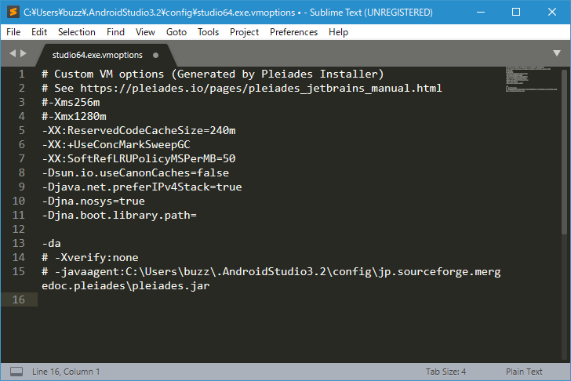
ファイルを保存してください。これで作業は完了です。確認のためにAndroid Studioを起動してください。
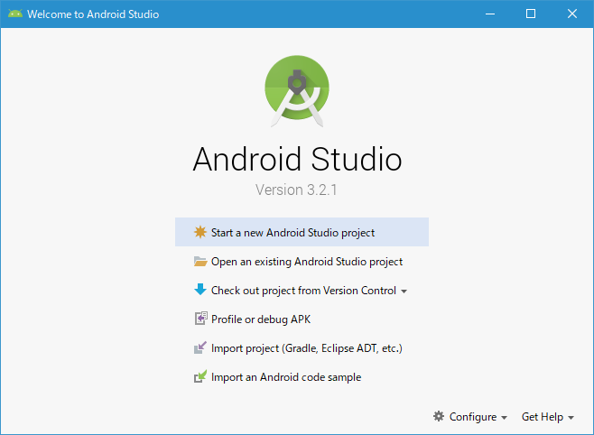
メニューやラベルが英語表記に戻っていることが確認できます。
( Written by Tatsuo Ikura )

著者 / TATSUO IKURA
初心者～中級者の方を対象としたプログラミング方法や開発環境の構築の解説を行うサイトの運営を行っています。